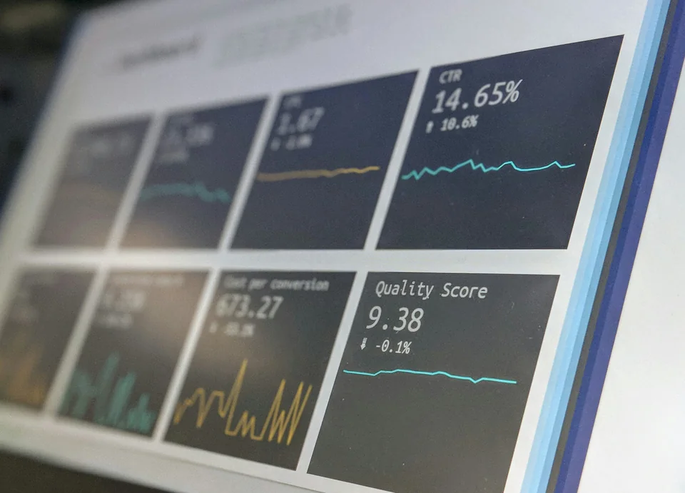

Give facility signals operational memory.
Maven brings CASPER metrics, surveys, investigations, open work, risk signals, documentation gaps, and quality priorities into a facility-level context.
From quality signal to owned follow-up.
The QAPI/CASPER workspace is functioning and expanding into the fuller Evo lifecycle. It should be understood as an operational workspace—not a prediction engine.

A trend is the beginning of the question.
CASPER measures, survey history, investigations, and open work provide context. Leadership determines what the signal means and whether it should become a QAPI priority.
Facility intelligence is context, not certainty.
Bring separate work into view
Survey history, investigations, open tasks, assignments, risk signals, documentation gaps, and quality indicators can be assembled around the facility.
Translate measurement into work
CASPER interpretation can produce focus areas, action plans, and monitoring plans that administrators review and operationalize.
Do not confuse a signal with a decision
Metrics and assisted analysis support investigation and QAPI judgment. They do not establish regulatory conclusions on their own.